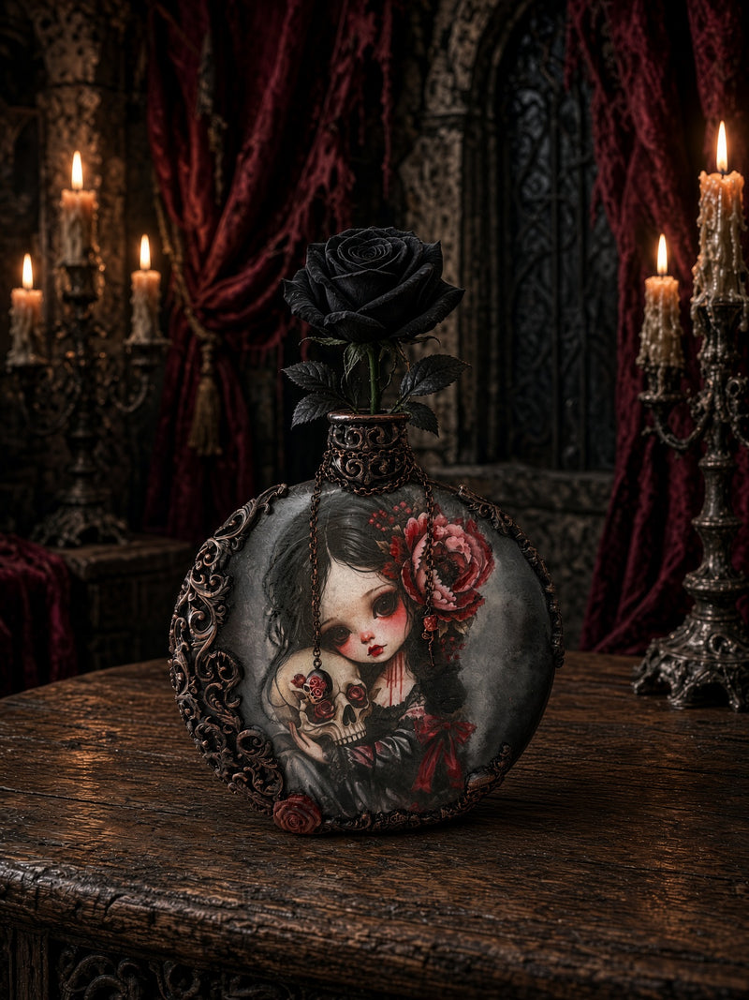

Gothic Romance Handcrafted Decorative Glass Bottle
$65.00 USD
Handcrafted Artisan Glass Bottle – Gothic Romance Collection
This haunting decorative glass bottle merges dark elegance with romantic beauty. Each piece is individually hand-decorated with decoupage art featuring a pale-faced maiden adorned with lush red peonies, her gaze melancholy and timeless. A delicate skull blooms with crimson roses at her heart—a memento mori whisper to treasure the feeling.
Details:
- Original glass vessel hand-embellished with hand-painted decoupage art
- Ornate cast-metal decorative collar with intricate scrollwork (aged bronze finish)
- 3D dimensional rose elements on shoulder
- Topped with decorative cork stopper
- Dark grey/charcoal base with jewel-tone details
- Each bottle is unique; minor variations in hand-applied details are intentional and add to the artisan character
Dimensions: 7.38" H × 6.25" W × 1.63" D
Materials: Glass, hand-painted decoupage, metal ornaments, cork
✨ LUXURY GIFT PACKAGING: Presented gift-ready in a navy velvet gift box with a black pouch, a metal rose and a card—ready to give as an heirloom piece
Care: Display only. Avoid moisture and direct sunlight to preserve artwork. Dust gently with soft cloth.
Perfect for: Vintage-inspired shelving, gothic home aesthetics, dark academia decor, collectible art pieces, luxury gift
Looking for more ideas? Read our guide: Gothic Christmas Gifts for Her
Static placeholder page of the local homepage copy.